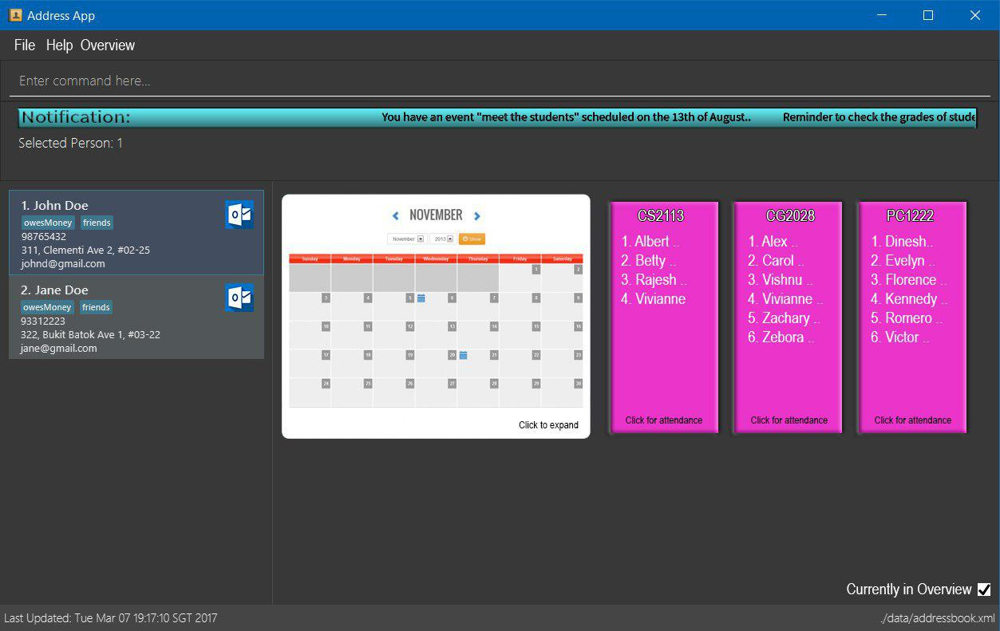

By: Team SE-EDU Since: Jun 2016 Licence: MIT
- 1. Introduction
- 2. Quick Start
- 3. Features
- 3.1. creating a group: 'group'
- 3.2. Adding a group: 'cal'
- 3.3. Populating a group: 'pop'
- 3.4. Create N number of group, distributed equally based on nationality or gender or both: 'makegroup'
- 3.5. Sending Email to Group of Persons: 'sendmail'
- 3.6. List a group of students: 'scorefilter'
- 3.7. Adding/deleting tags automatically: 'addtag/deletetag'
- 3.8. Viewing help :
helph - 3.9. Adding a person:
adda - 3.10. Listing all persons :
listl - 3.11. Editing a person :
edite - 3.12. Locating persons by name:
findf - 3.13. Deleting a person :
deleted - 3.14. Selecting a person :
selects - 3.15. Listing entered commands :
historyhis - 3.16. Undoing previous command :
undou - 3.17. Redoing the previously undone command :
redor - 3.18. Clearing all entries :
clearc - 3.19. Exiting the program :
exitex - 3.20. Saving the data
- 3.21. Encrypting data files
[coming in v2.0]
- 4. FAQ
- 5. Command Summary
1. Introduction
AddressBook Level 4 (AB4) is for those who prefer to use a desktop app for managing contacts. More importantly, AB4 is optimized for those who prefer to work with a Command Line Interface (CLI) while still having the benefits of a Graphical User Interface (GUI). If you can type fast, AB4 can get your contact management tasks done faster than traditional GUI apps. Interested? Jump to the Section 2, “Quick Start” to get started. Enjoy!
2. Quick Start
-
Ensure you have Java version
9or later installed in your Computer. -
Download the latest
addressbook.jarhere. -
Copy the file to the folder you want to use as the home folder for your Address Book.
-
Double-click the file to start the app. The GUI should appear in a few seconds.
 -
Type the command in the command box and press Enter to execute it.
e.g. typinghelpand pressing Enter will open the help window. -
Some example commands you can try:
-
list: lists all contacts -
addn/John Doe p/98765432 e/johnd@example.com a/John street, block 123, #01-01: adds a contact namedJohn Doeto the Address Book. -
delete3: deletes the 3rd contact shown in the current list -
exit: exits the app
-
-
Refer to Section 3, “Features” for details of each command.
3. Features
Command Format: Follows the upstream addressbook
3.1. creating a group: 'group'
Creates a group in the address book Format: group n/NAME Creates a group with the specified NAME Example: group n/CS2113
3.2. Adding a group: 'cal'
Adds a group to a date on the calendar Format: cal n/NAME d/DATE Adds a group with a specified NAME to a specified DATE (DDMMYY) on the calendar Example: cal n/CS2113 d/231018
3.3. Populating a group: 'pop'
Adds person(s) to a group Format: pop n/NAME INDEX [MORE_INDICES] Adds a person at specified INDEX(s) to group at specified NAME. The index refers to the index number shown in the displayed person list. The index must be a positive integer 1, 2, 3, … Example: pop n/CS2113 2 3 4 5
3.4. Create N number of group, distributed equally based on nationality or gender or both: 'makegroup'
Make multiple groups of N determined by the user, with a group name which will enumerate from 1 and user is able to select the condition to distribute equally via Gender & Nationally. Format: makegroup gn/GROUP_NAME n/NthGROUP g/GENDER l/LOCAL Create N number of equally distributed groups based on gender & nationality. GROUP_NAME is specified in String format, which a number will enumerate from 1 at the end of the string. N must be a positive integer to tell the system the number of group to be created. GENDER & LOCAL are boolean flags to enable the system to distribute equally based on. Example: makegroup gn/T13- n/5 g/true l/true
3.5. Sending Email to Group of Persons: 'sendmail'
Sends an email to all persons belonging to a group. Format: sendmail gn/GROUP_NAME t/EMAIL_TITLE [b/EMAIL_BODY] E.g. sendmail CS2113T Please be reminded to bring your calculator tomorrow.
3.6. List a group of students: 'scorefilter'
List out the standard deviation of the score data set from all students. Example: scorefilter Show the Standard deviation of the students exam score Format: scoreFilter [filter_standard] Example: scorefilter 56 This will query all the students who score below 56 into a new group, allowing the lecturer to help these people in need.
3.7. Adding/deleting tags automatically: 'addtag/deletetag'
Add/delete certain tags for certain group of people (e.g student perform excellent; students need to meet later; student need extra help)) automatically Format: addtag GROUP_NAME tag/ Format: deletetag GROUP_NAME tag/ Example: addtag TAG_STRING tag/need more attention Example: deletetag TAG_STRING tag/need more attention It will add a tag which is need more attention to all the students in the studentScoreLow group
Command Format
-
Words in
UPPER_CASEare the parameters to be supplied by the user e.g. inadd n/NAME,NAMEis a parameter which can be used asadd n/John Doe. -
Items in square brackets are optional e.g
n/NAME [t/TAG]can be used asn/John Doe t/friendor asn/John Doe. -
Items with
… after them can be used multiple times including zero times e.g.[t/TAG]…can be used ast/friend,t/friend t/familyetc. -
Parameters can be in any order e.g. if the command specifies
n/NAME p/PHONE_NUMBER,p/PHONE_NUMBER n/NAMEis also acceptable.
3.8. Viewing help : help h
Format: help
Shortcut Format: h
3.9. Adding a person: add a
Adds a person to the address book
Format: add n/NAME p/PHONE_NUMBER e/EMAIL a/ADDRESS [t/TAG]…
Shortcut Format: a n/NAME p/PHONE_NUMBER e/EMAIL a/ADDRESS [t/TAG]…
| A person can have any number of tags (including 0) |
Examples:
-
add n/John Doe p/98765432 e/johnd@example.com a/John street, block 123, #01-01 -
a n/Betsy Crowe t/friend e/betsycrowe@example.com a/Newgate Prison p/1234567 t/criminal
3.10. Listing all persons : list l
Shows a list of all persons in the address book.
Format: list
Shortcut Format: l
3.11. Editing a person : edit e
Edits an existing person in the address book.
Format: edit INDEX [n/NAME] [p/PHONE] [e/EMAIL] [a/ADDRESS] [t/TAG]…
Shortcut Format: e INDEX [n/NAME] [p/PHONE] [e/EMAIL] [a/ADDRESS] [t/TAG]…
Examples:
-
edit 1 p/91234567 e/johndoe@example.com
Edits the phone number and email address of the 1st person to be91234567andjohndoe@example.comrespectively. -
e 2 n/Betsy Crower t/
Edits the name of the 2nd person to beBetsy Crowerand clears all existing tags.
3.12. Locating persons by name: find f
Finds persons whose names contain any of the given keywords.
Format: find KEYWORD [MORE_KEYWORDS]
Shortcut Format: f KEYWORD [MORE_KEYWORDS]
Examples:
-
find John
ReturnsjohnandJohn Doe -
f Betsy Tim John
Returns any person having namesBetsy,Tim, orJohn
3.13. Deleting a person : delete d
Deletes the specified person from the address book.
Format: delete INDEX
Shortcut Format: d INDEX
Examples:
-
list
delete 2
Deletes the 2nd person in the address book. -
find Betsy
d 1
Deletes the 1st person in the results of thefindcommand.
3.14. Selecting a person : select s
Selects the person identified by the index number used in the displayed person list.
Format: select INDEX
Shortcut Format: s INDEX
Examples:
-
list
select 2
Selects the 2nd person in the address book. -
find Betsy
s 1
Selects the 1st person in the results of thefindcommand.
3.15. Listing entered commands : history his
Lists all the commands that you have entered in reverse chronological order.
Format: history
Shortcut Format: his
|
Pressing the ↑ and ↓ arrows will display the previous and next input respectively in the command box. |
3.16. Undoing previous command : undo u
Restores the address book to the state before the previous undoable command was executed.
Format: undo
Shortcut Format: u
|
Undoable commands: those commands that modify the address book’s content ( |
Examples:
-
delete 1
list
undo(reverses thedelete 1command) -
select 1
list
undo
Theundocommand fails as there are no undoable commands executed previously. -
delete 1
clear
undo(reverses theclearcommand)
u(reverses thedelete 1command)
3.17. Redoing the previously undone command : redo r
Reverses the most recent undo command.
Format: redo
Shortcut Format: r
Examples:
-
delete 1
undo(reverses thedelete 1command)
redo(reapplies thedelete 1command) -
delete 1
redo
Theredocommand fails as there are noundocommands executed previously. -
delete 1
clear
undo(reverses theclearcommand)
undo(reverses thedelete 1command)
redo(reapplies thedelete 1command)
r(reapplies theclearcommand)
3.18. Clearing all entries : clear c
Clears all entries from the address book.
Format: clear
Shortcut Format: c
3.19. Exiting the program : exit ex
Exits the program.
Format: exit
Shortcut Format: ex
3.20. Saving the data
Address book data are saved in the hard disk automatically after any command that changes the data.
There is no need to save manually.
3.21. Encrypting data files [coming in v2.0]
{explain how the user can enable/disable data encryption}
4. FAQ
Q: How do I transfer my data to another Computer?
A: Install the app in the other computer and overwrite the empty data file it creates with the file that contains the data of your previous Address Book folder.
5. Command Summary
-
Add
add n/NAME p/PHONE_NUMBER e/EMAIL a/ADDRESS [t/TAG]…
e.g.add n/James Ho p/22224444 e/jamesho@example.com a/123, Clementi Rd, 1234665 t/friend t/colleague -
Clear :
clear -
Delete :
delete INDEX
e.g.delete 3 -
Edit :
edit INDEX [n/NAME] [p/PHONE_NUMBER] [e/EMAIL] [a/ADDRESS] [t/TAG]…
e.g.edit 2 n/James Lee e/jameslee@example.com -
Find :
find KEYWORD [MORE_KEYWORDS]
e.g.find James Jake -
List :
list -
Help :
help -
Select :
select INDEX
e.g.select 2 -
History :
history -
Undo :
undo -
Redo :
redo